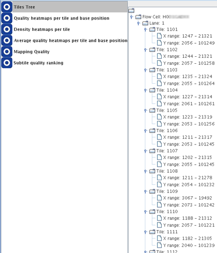

This module shows the names (numbers) of all tiles within the flowcell of which data was loaded onto the SUGAR. The information is shown as a tree structure including the levels/hierarchy following:

Each node of tiles has two daughter nodes showing range information of the sequence reads belonging to the given tile in X- and Y-coordinates.
CAUTION: When a loaded data file lacks information of the tile names/numbers and X-Y coordinates of sequence reads, an analysis of the SUGAR may result in failure.